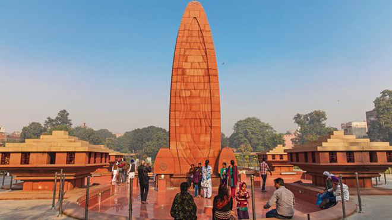
.
100m north-east of the Golden Temple is a narrow lane which leads between two tall buildings to Jallianwala Bagh - site of one of the bloodiest atrocities committed in the history of the British Raj.
In 1919, a series of one-day strikes was staged in Amritsar in protest against the Rowlatt Act which enabled the British to imprison, without trial, any Indian suspected of sedition. Martial Law was declared and a platoon of infantry arrived, led by General REH Dyer.
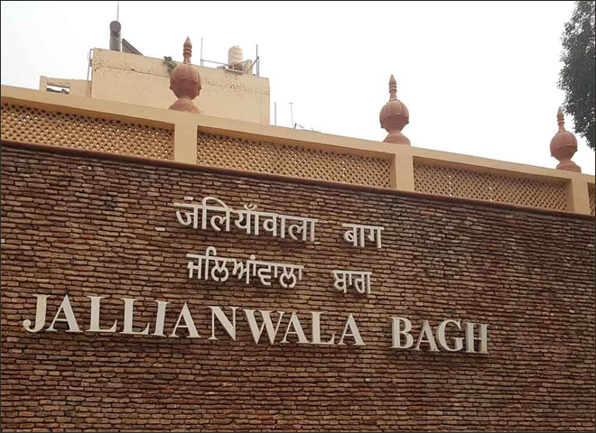
Despite a ban on public meetings, a demonstration was called by Mahatma Ghandi for 13 April, the Sikh holiday of Bhaisakhi. An estimated 20,000 people gathered at Jallianwala Bagh for the meeting but, before any speakers could address the throng, Dyer and his 150 troops blocked the exit and fired on the crowd.
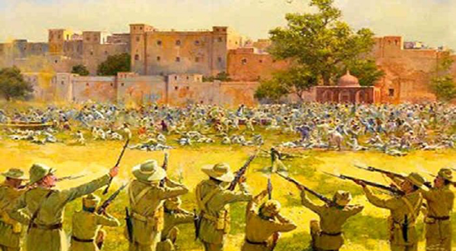
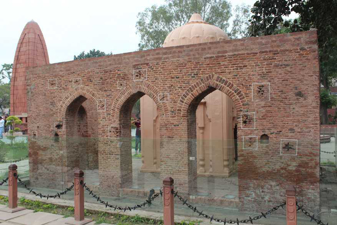
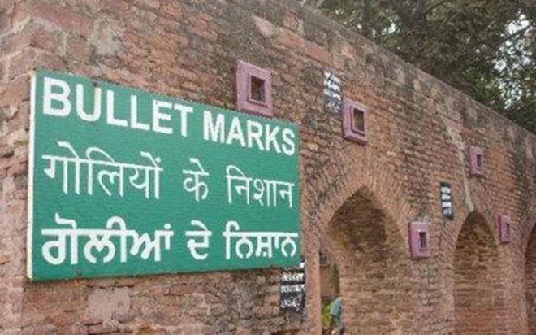
Hushed up for over six months in the UK, the massacre caused an international outcry when the story finally broke and it proved seminal in the Independence struggle, prompting Ghandi to initiate the widespread civil disobedience campaign that played such a significant part in ridding India of its colonial overlords.
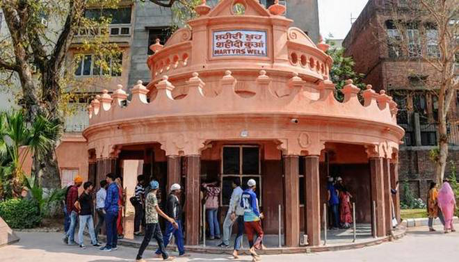
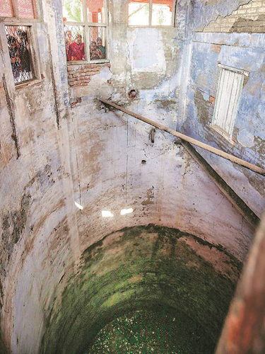
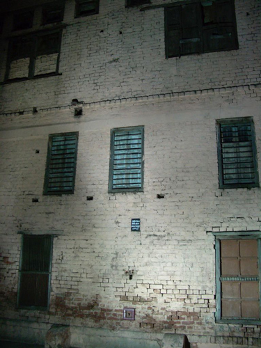
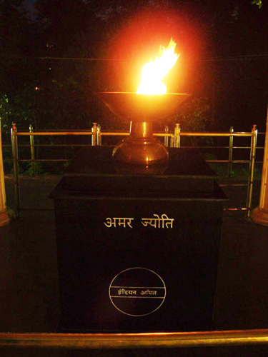
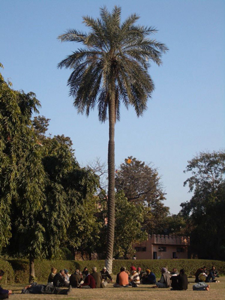
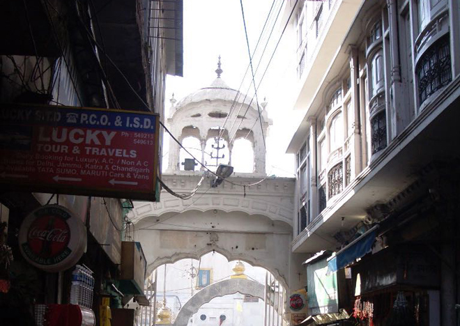
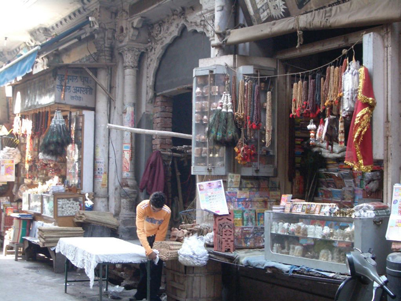
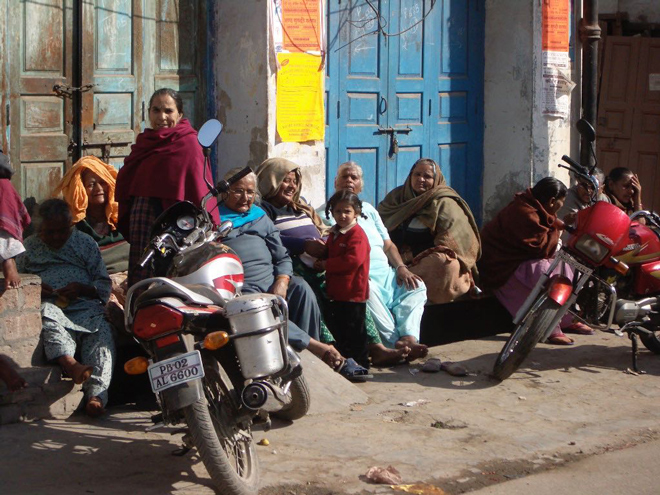
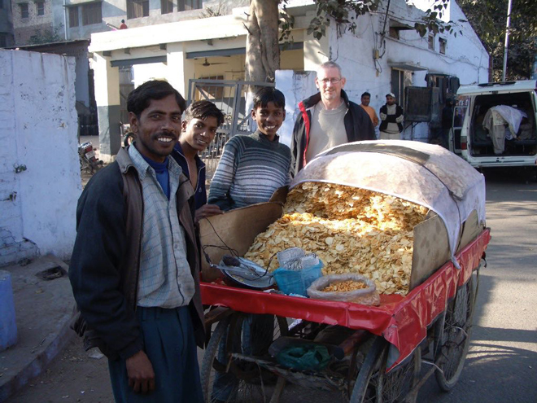
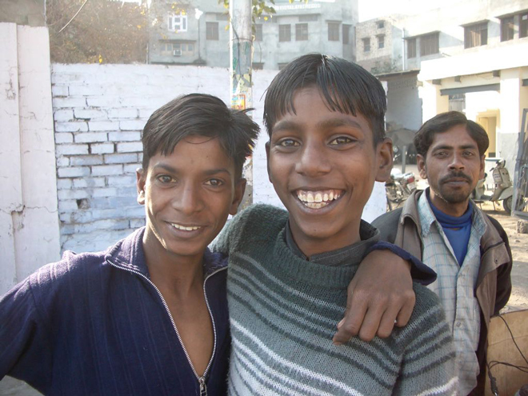